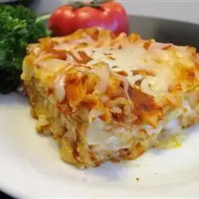

Cheese Lasagna

Description
This cheese lasagna recipe is an easy vegetarian lasagna with ricotta, mozzarella, and Parmesan cheeses.
Ingredients
-
1 (16 ounce) package lasagna noodles
-
4 cups ricotta cheese
-
4 eggs
-
¼ cup grated Parmesan cheese
-
salt and pepper to taste
-
1 teaspoon olive oil
-
3 cloves garlic, minced
-
1 (32 ounce) jar spaghetti sauce
-
1 teaspoon Italian seasoning
-
2 cups shredded mozzarella cheese
Steps
-
Cook and drain the ground beef, then stir in the spaghetti sauce and simmer.
-
Combine the cottage cheese, 2 cups of mozzarella, eggs, half of the Parmesan, and seasonings.
-
Assemble the lasagna according to the detailed recipe.
-
Bake, covered, for 45 minutes.
-
Uncover and continue baking for 10 minutes.